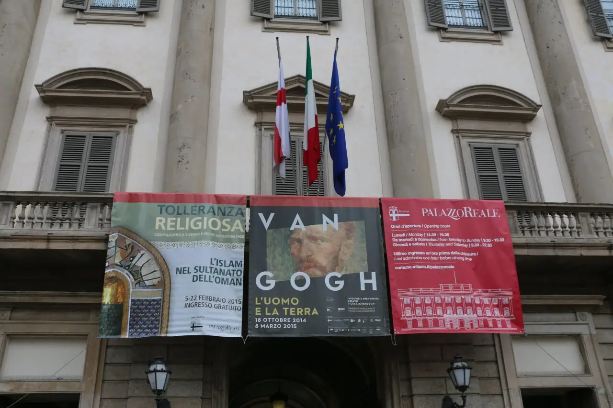
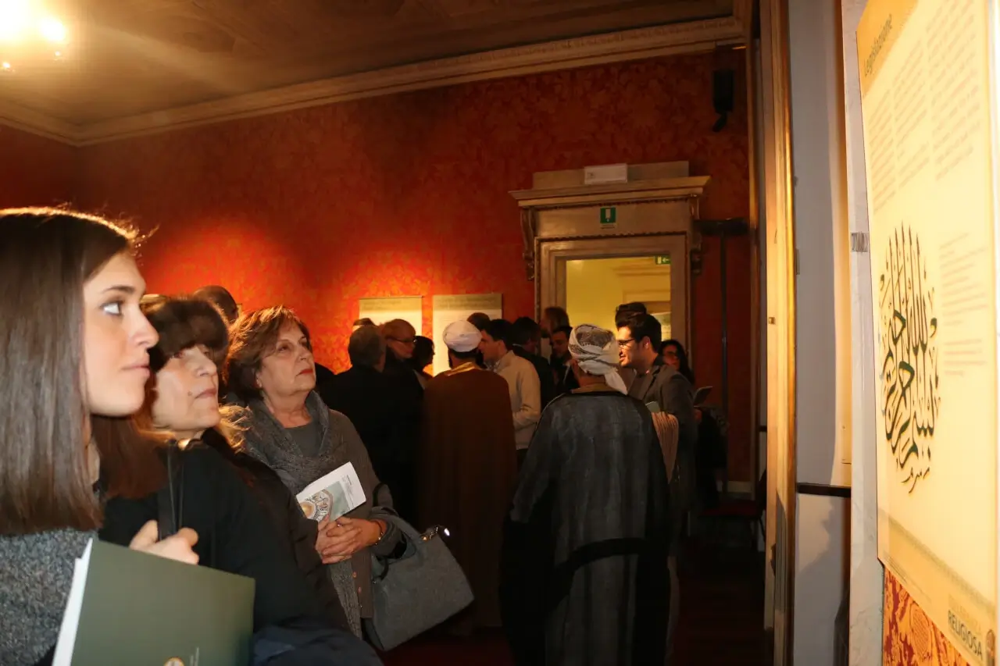
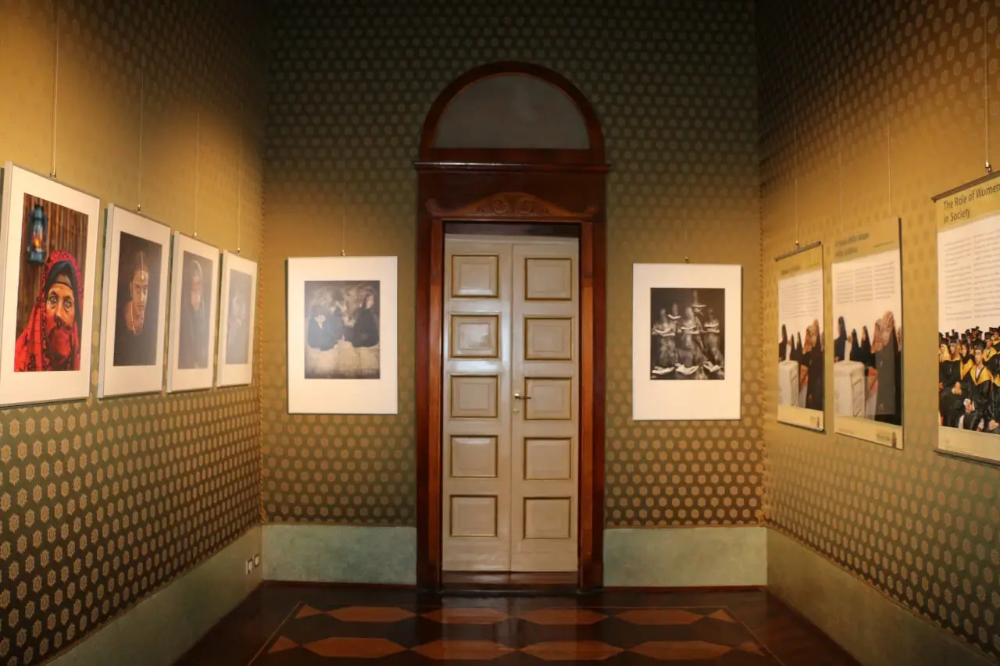
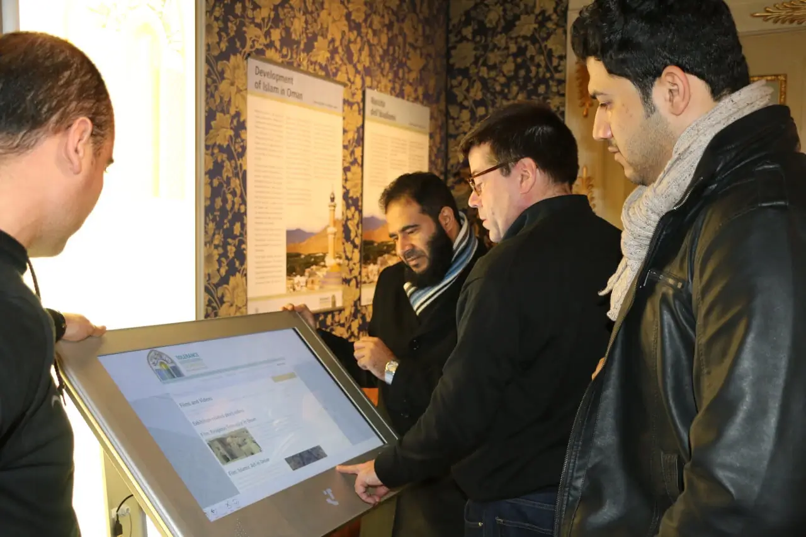

Palazzo Reale (Royal Palace) Museum, Milan, Italy 2015

February 4 through February 22, 2015
The exhibition “Religious Tolerance, Mutual Understanding, Peaceful Coexistence: Oman's Message of Islam” opened on Wednesday, February 4, 2015 in the world-famous Palazzo Reale Museum, in Milan, Italy.
In response to Mayor Giuliano Pisapia's invitation, Oman's Ministry of Endowments and Religious Affairs provided the information panels, photographs, manuscripts, calligraphy and other art works, which were on display and open to the general public in the 9 rooms of the “Prince’s Apartment” until February 22, 2015.
Speaking at the opening ceremony, Deputy Mayor Ada Lucia de Cesaris welcomed the exhibition and offered the hospitality of the city to the Omani delegation.
The director of the museum, Dr. Dominico Piraina, informed the guests that for the past 70 years the Palazzo Reale has been promoting knowledge of cultures, even beyond Europe.
“Because its doors are open to the world, the Palazzo Reale has dedicated its resources also to Arab art and culture.“
|  |  |  |
In his prepared remarks, the Councillor for Culture, Filippo Del Corno, stated that Milan welcomes this exhibition, especially this year when Milan is hosting the world Expo and “promoting peaceful coexistence between peoples for a better future for our planet.”
On behalf of the MARA, Mohammed Al Mamari, Scientific Advisor to the Minister made reference to the 1700-year old Edict of Milan, issued by the Roman emperor Constantine, giving the same rights to all religions throughout the Roman Empire. The Edict of Milan marked the birth of the concept of religious tolerance in the western world, granting freedom of expression to all faiths and religions.
Also in attendance from the city council were Mr. Francesco Cappelli, Councillor for Education, and Mr. Pier Francesco Majorino, Councillor for Social Politics.
The opening ceremony was attended by more than 200 members of the general public from all walks of life, government officials, diplomats and the press corps.
Please visit our Virtual Global Exhibition in your preferred language